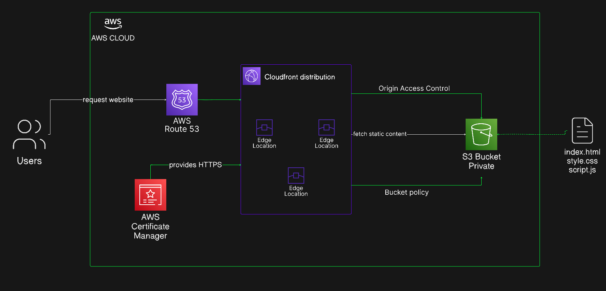

Live Demo
Deployment Simulator
# Ready to deploy website...
Status: Active
Architecture Overview
User
Requests website
→
CloudFront
CDN delivers content
→
S3 Bucket
Static files (storage)
→
Terraform
IaC manages infra
